Log in to Bianca¶
At the Bianca portal one can learn about using Bianca, for example:
- NAISS-SENS and rules regarding sensitive data
- How to do data transfer
- How to make Bianca do a calculation
- How to develop code on Bianca
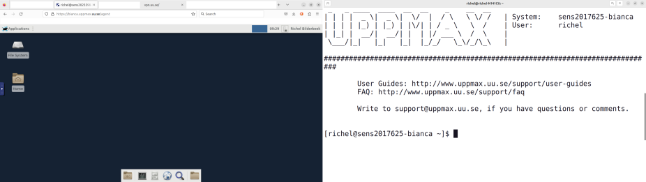
The two Bianca environments to work on Bianca. At the left is a remote desktop environment. At the the right is the console environment.
Here it is described how to login to Bianca:
- Bianca's design: helps understand why the procedure described here is needed.
- Prerequisites describes what is needed before one can login to Bianca
- The two Bianca environments shows the two ways to use Bianca
- Get within the university networks shows how to be allowed to access Bianca
- Get inside the Bianca environment show how to get inside the Bianca environments:
After logging in, one can visit the Bianca portal to learn how to use Bianca
Prerequisites for using Bianca¶
To be allowed to use Bianca, one needs all of these:
These prerequisites are discussed in detail below.
An active research project¶
One prerequisite for using Bianca
is that you need to be a member of an active SNIC SENS
or SIMPLER research project (these are called sens[number] or simp[number],
where [number] represent a number, for example sens123456 or simp123456).
Forgot your Bianca projects?
One easy way to see your Bianca projects is to use the Bianca remote desktop login screen at https://bianca.uppmax.uu.se/.
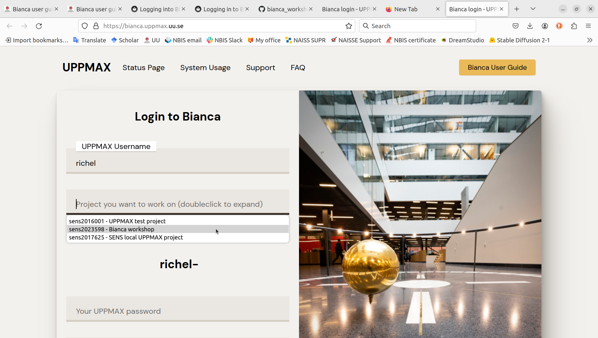
SUPR (the 'Swedish User and Project Repository') is the website that allows one to request access to Bianca and to get an overview of the requested resources.
How does the SUPR website look like?
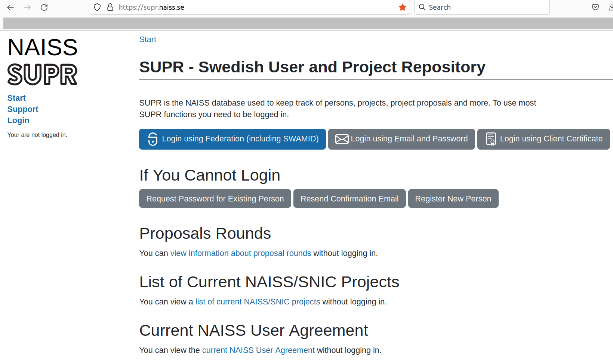
First SUPR page
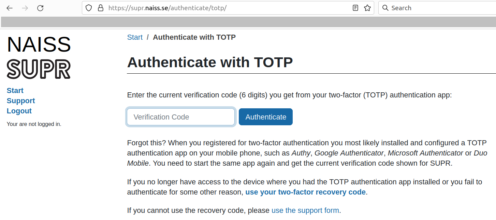
SUPR 2FA login. Use the SUPR 2FA (i.e. not UPPMAX)
After logging in, the SUPR website will show all projects you are a member of, under the 'Projects' tab.
How does the 'Projects' tab of the SUPR website look like?
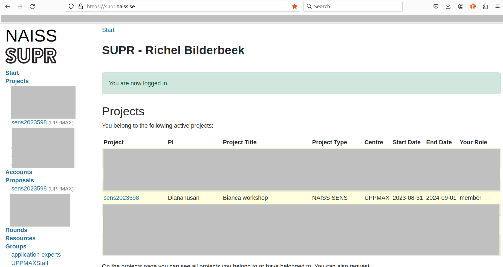
Example overview of SUPR projects
To see if a project has access to Bianca, click on the project and scroll to the 'Resources' section. In the 'Compute' subsection, there is a table. Under 'Resource' it should state 'Bianca @ UPPMAX'.
How does the 'Resources' page of an example project look like?
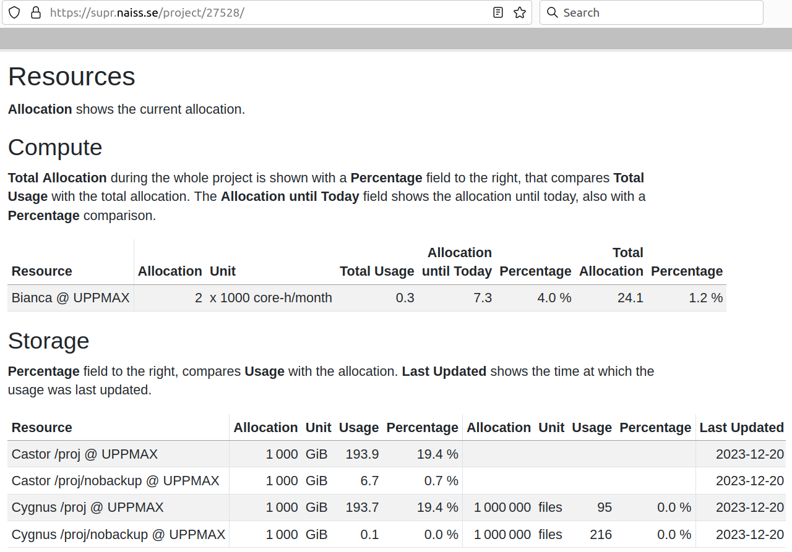
The 'Resources' page of an example project.
Note that the 'Accounts' tab can be useful to verify your username.
How does the 'Accounts' tab help me find my username?
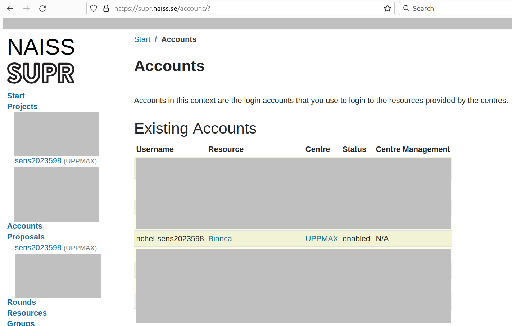
An example of a SUPR 'Accounts' tab. The example user has username
richel-sens2023598, which means his/her UPPMAX username isrichel
You can become a member of an active SNIC SENS by:
- request membership to an existing project in SUPR
- create a project. See the UPPMAX page on how to submit a project application here
An UPPMAX user account¶
Another prerequisite for using Bianca is that you must have a personal UPPMAX user account. This is separate from your SUPR account. See the user account application page if you do not have one.
Once you are set up for login, this should also be reflected in SUPR through one or several additional account(s) at UPPMAX for the specific project(s) you are a member of.
An UPPMAX password¶
Another prerequisite for using Bianca is that you need to know your UPPMAX password. If you change it, it may take up to an hour before changes are reflected in Bianca.
For advice on handling sensitive personal data correctly on Bianca, see our FAQ page.
The two Bianca environments¶
Bianca, like most HPC clusters, uses Linux. To use Bianca, there are two environments:
How does the Bianca remote desktop look like?
One can pick multiple remote desktop environments, such as GNOME and XFCE (and KDE, don't pick KDE!).
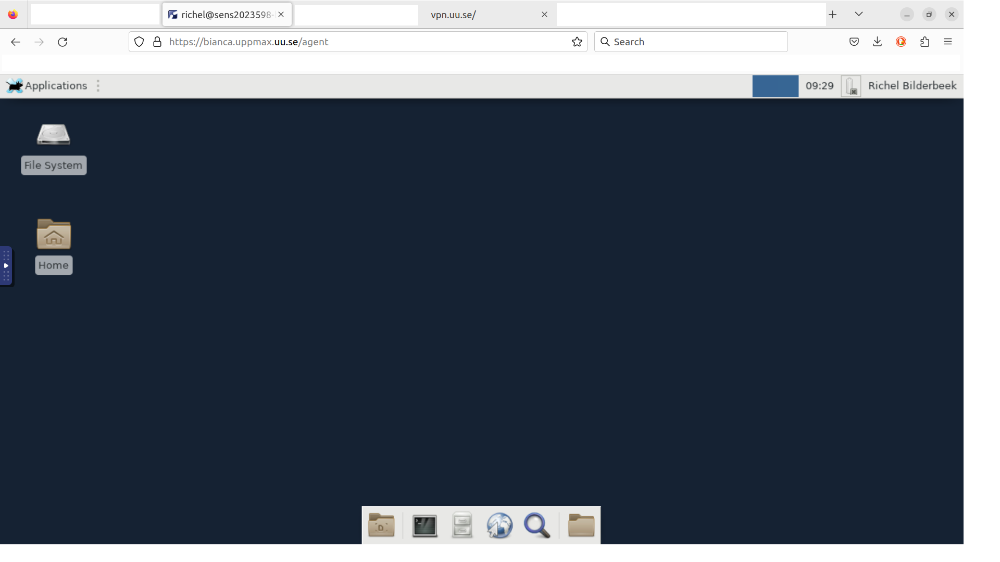
The Bianca XFCE remote desktop environment

A more populated Bianca XFCE remote desktop
- A remote desktop environment, also called 'graphical environment', 'GUI environment', 'ThinLinc environment'
How does the Bianca console environment look like?
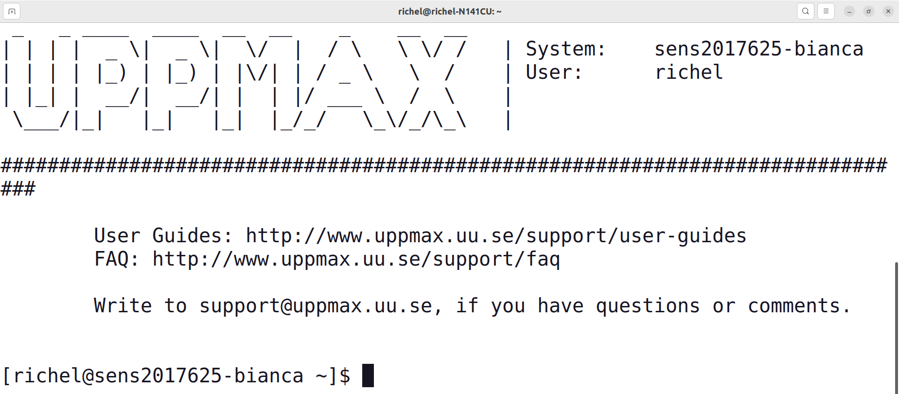
The Bianca console environment
- A console environment, also called 'terminal environment' or 'terminal'
The remote desktop environment is considered the easier place to start for most new users, as it has most similarities with what a new user is familiar with. However, one must always use a terminal to some extent.
flowchart TD
%% Give a white background, instead of a transparent one
classDef node fill:#fff,color:#000,stroke:#000
subgraph sub_bianca_private_env[The project's private virtual project cluster]
bianca_private_console[Bianca console environment]
bianca_private_remote_desktop[Bianca remote desktop]
bianca_private_terminal[Terminal]
end
%% Shared subgraph color scheme
%% style sub_outside fill:#ccc,color:#000,stroke:#ccc
%% style sub_inside fill:#fcc,color:#000,stroke:#fcc
%% style sub_bianca_shared_env fill:#ffc,color:#000,stroke:#ffc
style sub_bianca_private_env fill:#cfc,color:#000,stroke:#cfc
%% Private Bianca
bianca_private_console---|is a|bianca_private_terminal
bianca_private_remote_desktop-->|must also use|bianca_private_terminalThe two Bianca environments and their relation to a terminal.
Get within the university networks¶
Bianca has sensitive data. To protect this data, Bianca is accessible from all Swedish university networks. To be precise, to connect to Bianca one needs to so from a SUNET Internet Protocol ('IP') address.
Due to this, the first step to access Bianca is to get an IP that is inside SUNET first.
See the 'get inside the university networks' page here
Get inside the Bianca environment¶
Want a video?
- Login to the Bianca remote desktop and Bianca console environment, physically inside SUNET
- Login to the Bianca remote desktop and Bianca console environment, outside of SUNET, use VPN
- Install VPN client, then login to the Bianca remote desktop using that VPN client
- Login to the Bianca remote desktop and Bianca console environment, outside of SUNET, no VPN
When inside SUNET, one can access the Bianca environments.
- For a remote desktop environment, go to login to the Bianca remote desktop environment
- For a console environment, go to login to the Bianca console environment
Below, the ways to access these Bianca environments are discussed
flowchart TD
%% Give a white background, instead of a transparent one
classDef node fill:#fff,color:#000,stroke:#000
subgraph sub_inside[IP inside SUNET]
user(User)
subgraph sub_bianca_shared_env[Bianca shared network]
subgraph sub_bianca_private_env[The project's private virtual project cluster]
bianca_private_console[Bianca console environment]
bianca_private_remote_desktop[Bianca remote desktop]
end
end
end
%% Shared subgraph color scheme
%% style sub_outside fill:#ccc,color:#000,stroke:#ccc
style sub_inside fill:#fcc,color:#000,stroke:#fcc
style sub_bianca_shared_env fill:#ffc,color:#000,stroke:#ffc
style sub_bianca_private_env fill:#cfc,color:#000,stroke:#cfc
%% Inside SUNET
user --> bianca_private_console
user --> bianca_private_remote_desktopLogin to the Bianca remote desktop environment¶
As Bianca is an HPC cluster for sensitive data, one needs to be within SUNET to be able to access her.
Forgot how to get within SUNET?
See the 'get inside the university networks' page here
Bianca does not support any so-called X forwarding (unlike Rackham), so instead UPPMAX maintains a website that uses ThinLinc to get a full remote desktop environment. All you should need is a rather modern browser on any platform: we have tested on Chrome and Firefox :-)
How does it look like to try to access a remote desktop from outside of SUNET?
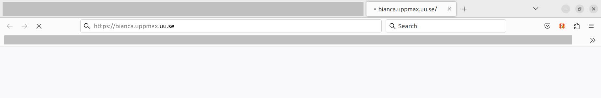
When accessing the Bianca UPPMAX login website from outside of SUNET, nothing will appear in your browser.
When inside SUNET, one can access a remote desktop environment using a website:
1. Go to https://bianca.uppmax.uu.se¶
In your web browser, go to https://bianca.uppmax.uu.se.
How does it look like when outside of SUNET?
Here you can see how this looks like when outside of SUNET.
Spoiler: quite dull, as nothing happens until these is a timeout.
2. Fill in the first dialog¶
Fill in the first dialog.
Do use the UPPMAX 2-factor authentication (i.e. not SUPR!)
How do I setup 2-factor authentication?
See the guide at 2-factor authentication to setup an UPPMAX 2-factor authentication method.
You really need to use the UPPMAX 2-factor authentication, i.e not the SUPR one, to login to Bianca.

Screenshot of a two-factor authentication app. Use the 2-factor authentication called 'UPPMAX' to access Bianca
Sometimes a webpage will be shown that asks you to wait. Simply do that :-)
How does that web page look like?

No Thinlinc Web Access active The login node for your project cluster is probably asleep. Boot initiated. The startup can take from 2 to 8 minutes.
This page will attempt to automatically reload. If nothing happens even after multiple minutes, you can do so manually. It is a bit more controlled in text mode.
When this takes long, your original second factor code might expire. In that scenario, you'll be redirected to the first login page again.
This is the webpage that shpws when a login node needs to be created.
3. Fill in the second dialog, using your regular password¶
Fill in the second dialog, using your regular password (i.e. no need for two-factor authentication).
How does that web page look like?
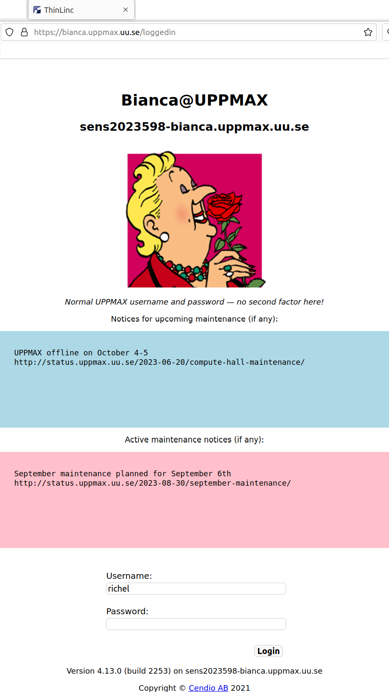
The second Bianca remote desktop login dialog. Note that it uses ThinLinc to establish this connection
4. Picking a remote desktop flavor, but not KDE¶
When picking a remote desktop flavor, pick GNOME or XFCE, avoid picking KDE.
How does that look like?
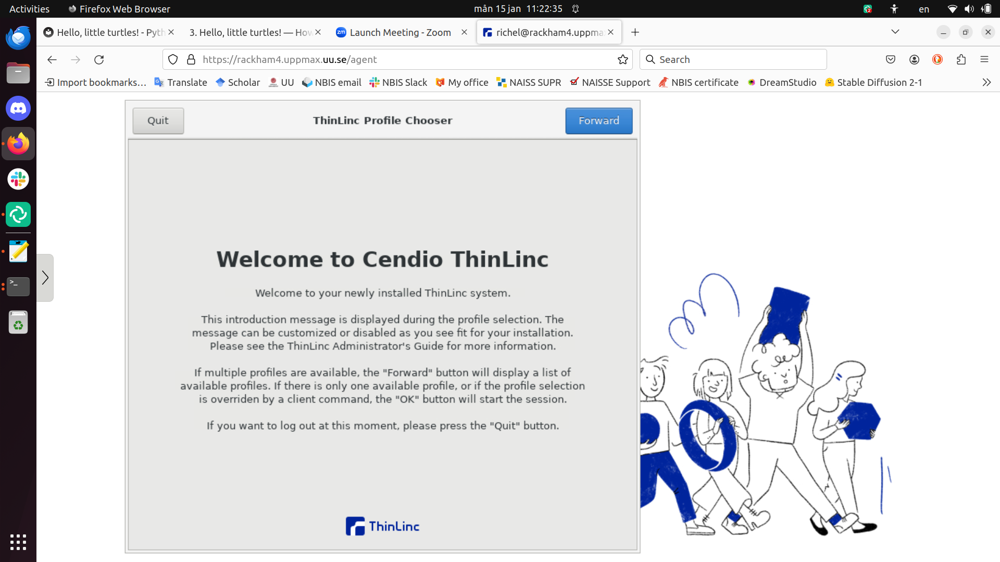
Here you are told you will need to pick a remote desktop flavor
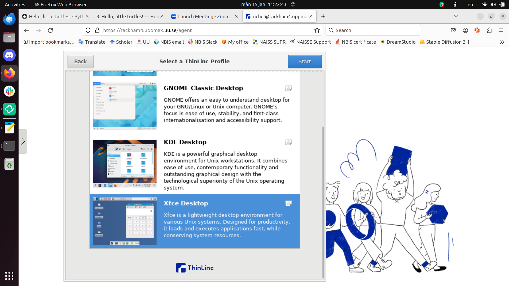
Here you are asked to pick a remote desktop flavor, with Xfce as the default. Pick any, except KDE.
Avoid choosing KDE
Avoid choosing the KDE desktop, as it gives problems when running interactive sessions.
Instead, we recommend GNOME or XFCE.
5. You are in!¶
Enjoy! You are in!
How does the remote desktop look like?
The Bianca remote desktop
Video: using VPN and access the remote desktop
This video shows how to use an installed VPN, after which the UPPMAX Bianca login website is used to access the Bianca remote desktop environment: YouTube, download (.mp4)
Under the hidden tab in the left edge of the screen, you can find a clipboard, icons of some special keys and the disconnect button:
- the clipboard is needed to be able to copy-paste text to/from Bianca.
- the icons of some special keys are needed for some users, as not all keyboard keys reach Bianca as expected.
- the disconnect button disconnects your session
What is the difference between 'disconnect session' and 'end session'?
'disconnect session' will save the current state of your session. When you connect again, you will get the remote desktop back in exactly in the same place you left the system. For example: if you were editing a file before disconnecting, your prompt will be in the same place you left it.
'end session' will not save the current state of your session. Instead, you will start with a clean slate at the next login.
Bianca has a automatically disconnect after 30 minutes of inactivity. In the future it is possible that we implement some kind of "automatic log out from active graphical session".
flowchart TD
%% Give a white background, instead of a transparent one
classDef node fill:#fff,color:#000,stroke:#000
subgraph sub_inside[IP inside SUNET]
user(User)
subgraph sub_bianca_shared_env[Bianca shared network]
bianca_shared_remote_desktop[Bianca remote desktop login]
subgraph sub_bianca_private_env[The project's private virtual project cluster]
bianca_private_remote_desktop[Bianca remote desktop]
%% Ensure the innermost square gets big enough
END:::hidden
end
end
end
%% Shared subgraph color scheme
%% style sub_outside fill:#ccc,color:#000,stroke:#ccc
style sub_inside fill:#fcc,color:#000,stroke:#fcc
style sub_bianca_shared_env fill:#ffc,color:#000,stroke:#ffc
style sub_bianca_private_env fill:#cfc,color:#000,stroke:#cfc
%% Inside SUNET
user-->|Bianca website, UPPMAX password and 2FA|bianca_shared_remote_desktop
bianca_shared_remote_desktop --> |UPPMAX password| bianca_private_remote_desktopLogin to the Bianca console environment¶
When inside SUNET, one can access a Bianca console environment using a terminal and the Secure Shell Protocol (SSH).
Forgot how to get within SUNET?
See the 'get inside the university networks' page here
You can use your favorite terminal to login (see https://uppmax.github.io/uppmax_intro/login2.html#terminals for an overview of many) to the Bianca command-line environment. You can also have multiple log-ins active at once.
There are multiple ways to set this up:
Using an SSH password is considered easiest, where using an SSH key is considered more elegant.
In a Bianca console environment:
- Text display is limited to 50kBit/s. This means that if you create a lot of text output, you will have to wait some time before you get your prompt back.
- Cut, copy and paste work as usual. Be careful to not copy-paste sensitive data!
flowchart TD
%% Give a white background, instead of a transparent one
classDef node fill:#fff,color:#000,stroke:#000
subgraph sub_inside[IP inside SUNET]
user(User)
subgraph sub_bianca_shared_env[Bianca shared network]
bianca_shared_console[Bianca console environment login]
subgraph sub_bianca_private_env[The project's private virtual project cluster]
bianca_private_console[Bianca console environment]
%% Ensure the innermost square gets big enough
END:::hidden
end
end
end
%% Shared subgraph color scheme
%% style sub_outside fill:#ccc,color:#000,stroke:#ccc
style sub_inside fill:#fcc,color:#000,stroke:#fcc
style sub_bianca_shared_env fill:#ffc,color:#000,stroke:#ffc
style sub_bianca_private_env fill:#cfc,color:#000,stroke:#cfc
%% Inside SUNET
user-->|SSH, UPPMAX password and 2FA|bianca_shared_console
bianca_shared_console --> |UPPMAX password or SSH key|bianca_private_consoleLogin to the Bianca console environment using an SSH password¶
When inside SUNET, one can access a Bianca console environment using SSH with an SSH password.
Forgot how to get within SUNET?
See the 'get inside the university networks' page here
This is considered the easier one to setup, but one will have to type a password twice to login. To get rid of one password and setup SHH keys, see here.
1. Use ssh to log in¶
From a terminal, use ssh to log in:
For example:
How does it look like when outside of SUNET?
Here you can see how this looks like when outside of SUNET.
Spoiler: quite dull, as nothing happens until these is a timeout.
Why no -A?
On Bianca, one can use -A:
this option is only useful when
using SSH keys
to access Bianca.
As we here use passwords (i.e. no SSH keys)
to access Bianca, -A is unused
and hence we simplify this documentation by omitting it.
Why no -X?
On Rackham, one can use -X:
However, on Bianca, this so-called X forwarding is disabled. Hence, we do not teach it :-)
2. Type your UPPMAX password with 2FA¶
Type your UPPMAX password,
directly followed by the UPPMAX 2-factor authentication number,
for example verysecret678123, then press enter.
In this case, the password is verysecret and 678123
is the 2FA number.
After authenticated using the UPPMAX password and 2FA, you are logged in on Bianca's shared network, on a so-called 'jumphost'.
However, you will still need to login to your own private virtual project cluster. As you are already properly authenticated (i.e. using an UPPMAX password and UPPMAX 2FA), you don't need 2FA anymore.
What is a virtual project cluster?
As Bianca holds sensitive data, by regulations, each Bianca project must be isolated from each other and are not allowed to, for example, share the same memory.
One way to achieve this, would be to build one HPC cluster per project. While this would guarantee isolated project environments, this would be quite impractical.
Instead, we create isolated project environments by using software, that creates so-called virtual clusters, as if they would be physical clusters. Like physical clusters, a virtual cluster has a guaranteed isolated project environment.
When you login to Bianca's shared network,
you will get a message of your project's login node status.
It can be up and running or down.
If it is down, the virtual cluster is started,
which may take some minutes.
3. Type your UPPMAX password¶
Type your UPPMAX password,
for example verysecret
4. You are in!¶
Enjoy! You are in! Or, to be precise, you are on the login node of your own virtual project cluster. By default, this node has one core, hence if you need more memory or more CPU power, you submit a job (interactive or batch), and an idle node will be moved into your project cluster.
Video: how to use a terminal and SSH to access the Bianca console environment
This video shows how to use a terminal and SSH to access the Bianca console environment: YouTube, download (.ogv)
Login to the Bianca console environment using SSH keys¶
When inside SUNET, one can access a Bianca console environment using SSH and SSH keys.
Forgot how to get within SUNET?
See the 'get inside the university networks' page here
This is considered a bit harder to setup, but one only needs to type one password to login to Bianca. If you don't mind typing your UPPMAX password twice, an easier setup is here.
1. Use ssh to log in¶
From a terminal, use ssh to log in:
For example:
How does it look like when outside of SUNET?
Here you can see how this looks like when outside of SUNET.
Spoiler: quite dull, as nothing happens until these is a timeout.
Why no -X?
On Rackham, one can use -X:
However, on Bianca, this so-called X forwarding is disabled. Hence, we do not teach it :-)
2. Type your UPPMAX password and 2FA¶
Type your UPPMAX password,
directly followed by the UPPMAX 2-factor authentication number,
for example verysecret678123, then press enter.
In this case, the password is verysecret and 678123
is the 2FA number.
3. You are in!¶
Enjoy! You are in!
Why does one need two passwords?
The first password is needed to get into the shared Bianca environment. This password contains both an UPPMAX password and an UPPMAX 2FA number.
The second password is needed to go to the login node of a project's virtual cluster.
flowchart TD
%% Give a white background, instead of a transparent one
classDef node fill:#fff,color:#000,stroke:#000
classDef focus_node fill:#fff,color:#000,stroke:#000,stroke-width:4px
subgraph sub_bianca_shared_env[Bianca shared network]
bianca_shared_console[Bianca console environment login]
bianca_shared_remote_desktop[Bianca remote desktop login]
subgraph sub_bianca_private_env[The project's private virtual project cluster]
bianca_private_console[Bianca console environment]
bianca_private_remote_desktop[Bianca remote desktop]
bianca_private_terminal[Terminal]
end
end
%% Shared subgraph color scheme
%% style sub_outside fill:#ccc,color:#000,stroke:#ccc
%% style sub_inside fill:#fcc,color:#000,stroke:#fcc
style sub_bianca_shared_env fill:#ffc,color:#000,stroke:#ffc
style sub_bianca_private_env fill:#cfc,color:#000,stroke:#cfc
%% Shared Bianca
bianca_shared_console --> |UPPMAX password|bianca_private_console
bianca_shared_remote_desktop-->|UPPMAX password|bianca_private_remote_desktop
%% Private Bianca
bianca_private_console---|is a|bianca_private_terminal
bianca_private_remote_desktop-->|must also use|bianca_private_terminalExtra material¶
Overview¶
flowchart TD
%% Give a white background, instead of a transparent one
classDef node fill:#fff,color:#000,stroke:#000
classDef focus_node fill:#fff,color:#000,stroke:#000,stroke-width:4px
subgraph sub_outside[IP outside SUNET]
outside(Physically outside SUNET)
end
subgraph sub_inside[IP inside SUNET]
physically_inside(Physically inside SUNET)
inside_using_vpn(Inside SUNET using VPN)
inside_using_rackham(Inside SUNET using Rackham)
subgraph sub_bianca_shared_env[Bianca shared network]
bianca_shared_console[Bianca console environment login]
bianca_shared_remote_desktop[Bianca remote desktop login]
subgraph sub_bianca_private_env[The project's private virtual project cluster]
bianca_private_console[Bianca console environment]
bianca_private_remote_desktop[Bianca remote desktop]
bianca_private_terminal[Terminal]
end
end
end
%% Shared subgraph color scheme
style sub_outside fill:#ccc,color:#000,stroke:#ccc
style sub_inside fill:#fcc,color:#000,stroke:#fcc
style sub_bianca_shared_env fill:#ffc,color:#000,stroke:#ffc
style sub_bianca_private_env fill:#cfc,color:#000,stroke:#cfc
%% Outside SUNET
outside-->|Move physically|physically_inside
outside-->|Use a VPN|inside_using_vpn
outside-->|Login to Rackham|inside_using_rackham
%% Inside SUNET
physically_inside-->|SSH|bianca_shared_console
physically_inside-->|UPPMAX website|bianca_shared_remote_desktop
physically_inside-.->inside_using_rackham
physically_inside-.->inside_using_vpn
inside_using_vpn-->|SSH|bianca_shared_console
inside_using_vpn-->|UPPMAX website|bianca_shared_remote_desktop
inside_using_rackham-->|SSH|bianca_shared_console
%% Shared Bianca
bianca_shared_console --> |UPPMAX password|bianca_private_console
bianca_shared_remote_desktop-->|UPPMAX password|bianca_private_remote_desktop
%% Private Bianca
bianca_private_console---|is a|bianca_private_terminal
bianca_private_remote_desktop-->|must also use|bianca_private_terminal